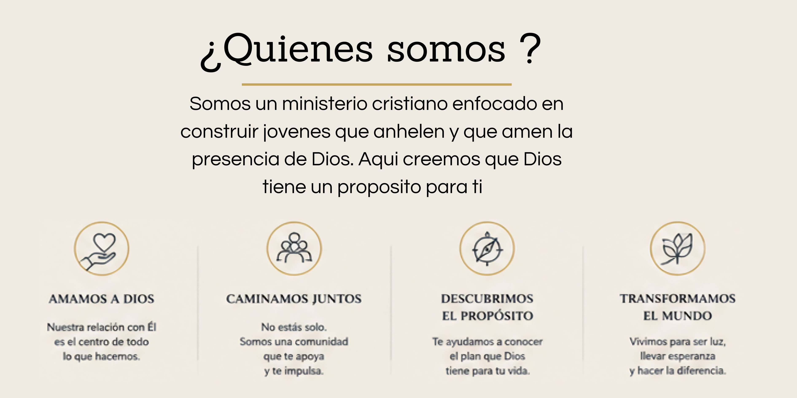
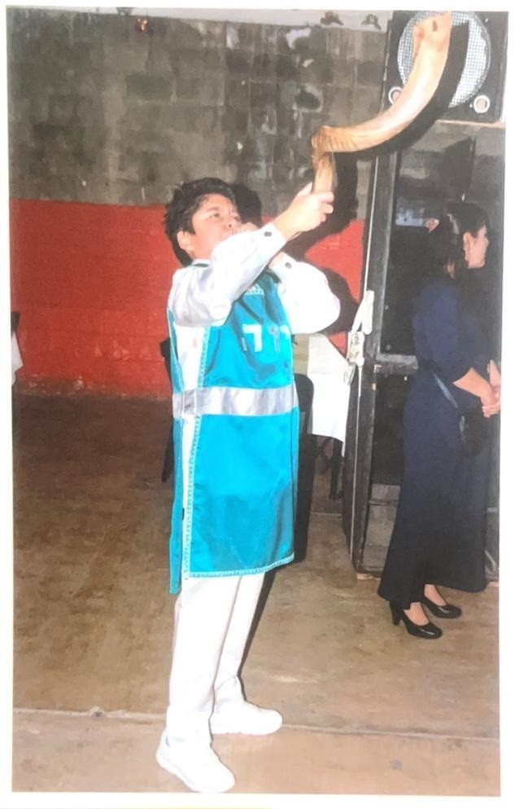

|
Luis Alberto Grajeda Rodríguez es un joven pastor apasionado por la presencia de Dios y comprometido con llevar su palabra a otros. Su corazón está enfocado en ministrar a través de diferentes áreas como la danza, el uso del shofar y especialmente la alabanza, como formas de adoración genuina. Más allá de sus talentos, su mayor anhelo es compartir el mensaje de Dios y ver vidas transformadas. Reconoce que, como todo ser humano, ha enfrentado momentos difíciles y caídas a lo largo de su vida, pero eso no ha detenido su fe ni su propósito. Hoy, su caminar está guiado por un solo objetivo: crecer cada día más y convertirse en un hombre conforme al corazón de Dios, viviendo una vida que refleje su amor, su gracia y su verdad. Siempre predicando sin olvidar que es un joven como tu. |
 |
Itzel es una ministra de Dios que ama proclamar Su palabra con pasión y entrega. Es una persona cercana, amigable y accesible, con quien es fácil hablar y en quien se puede confiar, siempre dispuesta a escuchar y acompañar a otros. Su corazón está enfocado en la ministración y en servir a Dios con todo lo que es. Además, fluye en el área profética, buscando siempre ser un instrumento sensible a la voz del Espíritu Santo para edificar y fortalecer a otros. Itzel es una mujer virtuosa, con un carácter guiado por los principios de Dios, que refleja amor, humildad y compromiso en su caminar espiritual. Su vida está dedicada a honrar a Dios y a ser de bendición para quienes la rodean. |